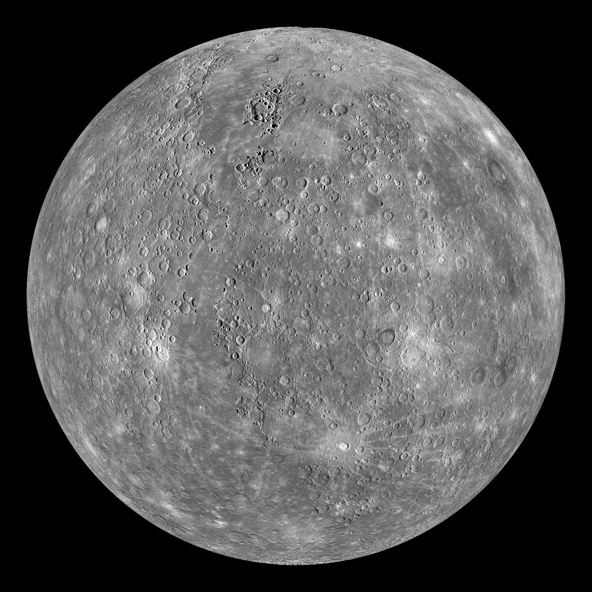

Меркурий е най-малката планета в Слънчевата система и най-близката до Слънцето, около което прави по една обиколка на всеки 88 земни денонощия. Тъй като обикновено е скрит от блясъка на Слънцето, освен по време на слънчево затъмнение, Меркурий може да бъде наблюдаван само за кратки периоди преди изгрев или след залез.
Сведенията за Меркурий са сравнително малко, тъй като с наземни телескопи може да се наблюдава само един осветен полумесец без много подробности. Първият от двата космически апарата, посетили планетата, е Маринър 10, който успява да заснеме около 45% от повърхността на планетата от 1974 до 1975 година. Другият апарат е МЕСИНДЖЪР, който достига околопланетна орбита на 17 март 2011 година, и има за цел да картографира и останалата част от планетата.
Регистрираните наблюдения на Меркурий датират поне от първото хилядолетие пр.н.е. Преди 4 век пр.н.е. древногръцките астрономи смятат планетата за два отделни обекта – единият видим при изгрев, който те наричат Аполон, а другият – при залез, наричан Хермес. Българското наименование на планетата идва от името на бога Меркурий, римският аналог на Хермес.

Ето някои данни за Нептун.
| Отдалеченост от Слънцето | 57 909 227 км. |
| Екваториален диаметър | 4878 км. |
| Плътност спряма водата | 5,43 пъти |
| Продължителност на деня | 176 земни дни |
| Продължителност на годината | 88 земни дни |
| Средна температура на повърхността | 300°C |
| Известни луни | 0 |